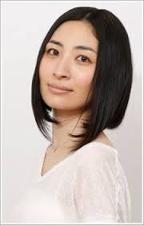

A seiyuu is the Japanese term for a voice actor. They are known for dubbing overseas flms, video games, and most famously, Japanese animation
Here are a few notable faces in the voice acting industry in Japan
Born on February 20, 1980 in Kagawa, Japan, Yuichi Nakamura is one of the most recognizable faces in the voice acting industry.
He is responsible for providing the voice of Gray Fullbuster in Fairy Tail and Tomoya Okazaki in Clannad.
Nakamura will be the voice of Ray Shirogane starting in Sword Masters VI: Azure Void
Born on May 25, 1970 in Otsu, Shiga, Japan, Satsuki Yukino has been in the voice acting industry since the 90s. She got her start in Crayon Shin Chan as a side character.
Her notable work is in Inuyasha as Kagome Higurashi and the infamous Mion and Shion Sonozaki in Higurashi: When They Cry.
Yukino will provide the voice of Ganesha Zaveid starting in Sword Masters VII: Year of the Fox
Born on October 13, 1993 in Tokyo, Japan, Kaito Ishikawa is one of the younger voice actors that has proven quite a force to be reckoned with.
His most notable roles is in shows such as My Hero Academia as Tenya Iida and Assassination Classroom as Ren Sakakibara.
Ishikawa will lend his voice to the hero Kaito Sakamoto starting in Sword Masters I: Dawn of Beginnings.

Born on March 31, 1980 in Tokyo, Japan, Maaya Sakamoto is one of the more prolific voice actresses since the late 90s. She is also married to fellow voice actor Kenichi Suzumura.
Sakamoto's most notable work is in anime such as Ouran High School Host Club as Haruhi Fujioka, Soul Eater as Crona, and in Final Fantasy VII as Aerith Gainsborough.
Sakamoto will be the voice of Kohaku Kawashima staring in Sword Masters I: Dawn of Beginnings.
Born on February 6, 1974 in Chiba, Japan, Hiroyuki Yoshino is a voice actor that has a distinctive tone to his voice acting.
His most notable work is in Sket Dance as Yusuke "Bossun" Fujisaki and Present Mic in My Hero Academia
Yoshino will provide the voice of Max Soifong starting in Sword Masters II: Hero's Vortex.
Born on February 1, 1973 in Okayama, Japan, Makiko Ohmoto is a high profile voice actress that has been in the industry since the 90s. She is also the chief director's personal favorite voice actress of all time.
She is well known for her role as Kirby and Ina from the Samurai Warriors video game series.
Ohmoto will provide the voice of Aurora Winters starting in Sword Masters XII: Celestial Winter